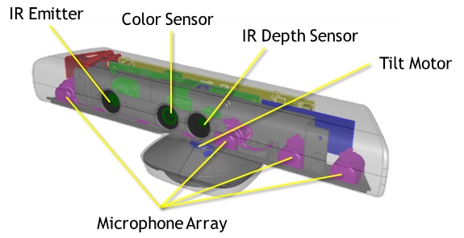
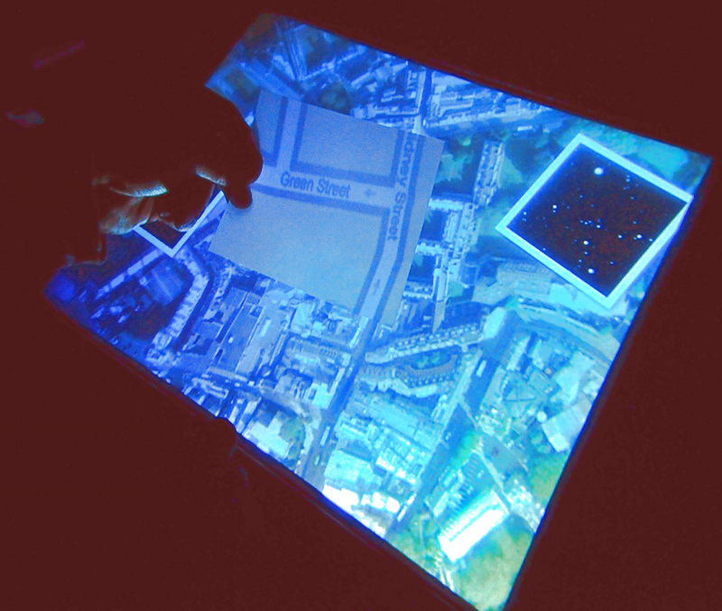

Wer bin ich
- Im Mai 1 Jahr dabei
- Natürliches Hobby
- Technische Erfahrung
First: Infrared
Innotalk
Natural User Interfaces
Eine vierteilige Trilogie
- Einleitung
- Technik
- Warum
- Zukunft
1. Einleitung
And then you indent the text afterwards. You can have a lot of formatting in the presenter notes, like emphasis and strong emphasis.
Am Anfang war das...
And then you indent the text afterwards. You can have a lot of formatting in the presenter notes, like emphasis and strong emphasis.
Vom CLI zum GUI zum NUI

Wikipedia sagt
“In computing, a natural user interface, or NUI, or Natural Interface is the common parlance used by designers and developers of human-machine interfaces to refer to a user interface that is effectively invisible, and remains invisible as the user continuously learns increasingly complex interactions.”
And then you indent the text afterwards. You can have a lot of formatting in the presenter notes, like emphasis and strong emphasis.
- Even bullet lists!
- Which can be handy!
But you can't have any headings.
WAT?

NUI ist touch Phone und noch so viel mehr
Wer kennt Minority Report?
Oblong gSpeak
Video; Wer hats erfunden?
Das sieht ja cool aus...
Problem
Neue Interaktionsparadigmen
Fullscreen in Android KitKat
Wie komme ich hier raus?
Ganz natürlich!
Fullscreen in gSpeak
Wie komme ich hier raus?
Ganz natürlich per divide & unite
Interaktion ist eine Sprache
Diese muss erst erlernt werden
Natural
User
Interface
(2. Erklärung)
Wir nutzen unser Wissen aus der natürlichen Welt
NUI ist nicht natürlich
NUI wird natürlich
Weg mit indirekter Tastatur & Maus
Interaktion wird
- direkter
- vielfältiger
- natürlicher
2. Technologie
Multimodal
Computer -> Informationsweitergabe <- Mensch
Natural ist noch lange nicht ausgereizt
let's talk about
Touch
Beim iPhone ist noch nicht Schluss
Microsoft PixelSense (Surface)
Infrarot
Geht auch kleiner
Das Display sieht
Tangible: Das Display erkennt
aber nur bestimmte Sachen
Resultat
- :) Sehr viele Finger
- :) :( Mehr als nur Finger
- :( Sonnenlicht
Tangible: Versteht auch ein Baby
Vision: Das Display ist die Kamera
let's talk about
Microsoft Kinect
Sensoren
Infrarot-Mesh
Skelett und Gelenke

K(inect) Reader
Video
Interface für Sehbehinderte
Resultat
- :) Gute Menscherkennung
- :) Körpersinn
- :) Raumkontext
- :( Sonnenlicht
- :( Datengenauigkeit
- :( Keine Finger
- :( Mikrophone
let's talk about
Leap Motion
Hand und Finger

Gesten
Live-Demo
Resultat
- :) Sehr genau
- :) Arbeit am PC
- :( Sonnenlicht
- :( Noch Keine Fingerunterscheidung
- Integriert bei HP
- Bundle bei ASUS
let's talk about
Microchip GestIC
Es geht auch ohne Infrarot
Anwendung im Auto
let's talk about
Tangible (2nd time)
Microsoft SecondLight
let's talk about
Ubiquitous
Input und Output Unlimited
Microsoft LightSpace
Regulärer Tisch + Projektor + Kinect
let's talk about
Eyetracking
Nicht nur für die Werbeindustrie
Samsung: Smart Stay/Scroll/Pause
let's talk about
Wearable
Mehr als nur SmartWatches und Glass
Bio-Acoustics
Funktioniert auch noch beim Joggen
Bio-Interface
MIT SixthSense
Umgebung ist das Interface
Ich bin das Interface
let's talk about
Taktil
Taktile Hologramme
Ja es gibt sie
Ultraschall +
Projektion + Wii-Tracking
MIT ZeroN
MIT inForm
Alles schön und gut aber
Warum nicht gleich nur Sprache?
Keine Wollmilchlösung
- Nicht jede Interaktion Möglich
- Malen per Stimme?
- Effektivität von Input/Output
- Sprache ist einfach noch nicht so weit
Zukunft ist Multimodal & Multidevice
Sprache gehört da natürlich auch dazu
Was wir gehört haben
- Touch: PixelSense
- Tangible: PixelSense, SecondLight
- Spatial: Kinect, Leap, GestIC
- Ubiquitous: LightSpace
- Wearable: SmartWatch, BioAcoustics, SixthSense
- Taktil: inForm, ZeroN, Hologramme
- Eyetracking
3. Nutzen
Bei all der Technikliebe
Warum überhaupt NUI
Eine Evolution der Erlernbarkeit
- Ein Kind und sein iPhone?
- Ein Kind und sein PC?
Tradeoff Effizienz?
Datei als Email-Attachment:
uuencode /var/log/messages messages.txt | mailx -s "/var/log/messages on $HOST" me@example.com
Pro NUI
- :) Erlernbarkeit
- :) Charmant und Motivierend zu Bediennen
- :) Manche Interatkion sehr effizient
- :) Körpersinn; Weg mit dem visuellen
- :) Dritte Dimension
- :) Der Raum als Kontext
Con NUI
- :( Viel mehr Interferenz
- :( Computer muss schlau sein; Ungewollte Aktionen
- :( Körperliche Fähigkeiten der Benutzter (Finger, Ausdauer)
- :( Effizienz
- :( Interoperabilität der Modalitäten
Con Datenschutz
- Es geht nicht mehr um irgendeine Person
- Es geht um DICH
- Dein Fingerabdruck, Gesicht, Puls, Ort, ...
- Geräte verteilen Daten untereinander und in der Cloud
- Kinect One/Moto X lauscht immer
Vom CLI zum NUI zum ?
Was kommt danach
Marketingschlacht
- PUI
- OUI
- etc
4. Zukunft
let's talk about
Interaktionsparadigmen
Multitouch bedeutet auch Multiuser
Welche Finger zu welcher Geste?
Multiuser bei NUI
- Bei Sprache
- Bei Kinect
let's talk about
Was sollte bleiben
:)
- NUI wird natürlich
- Viele neue Eingabe/Ausgabe
- Die Zukunft ist MultiModal und Multidevice
- NUI ist noch lange nicht am Ende
:(
- Deviceinteroperabilität
- Unklare Interaktionsparadigmen
- Körperlichen Fähigkeiten
let's talk about
Us
Was machen wir denn mit NUI?
Smartphones ist euch noch nicht genug?
Ein paar Vorschläge
- Jetzt: WiiWhiteboard
- NUI für kreative, kollaborative Prozesse
- GestIC in Autos
Vergessen
- Ambient Assited Living (Versorgungslücke)
- Output: Augmented/Virtual Reality
- viel anderes
let's talk about
Vision
Auto
- Fensterheber
- Musik
- Augmented Reality
Präsentation
- Fern Präsentieren
- Nah Markieren
Smart Home
Fragen und Antworten
Vielen Dank für die Aufmerksamkeit